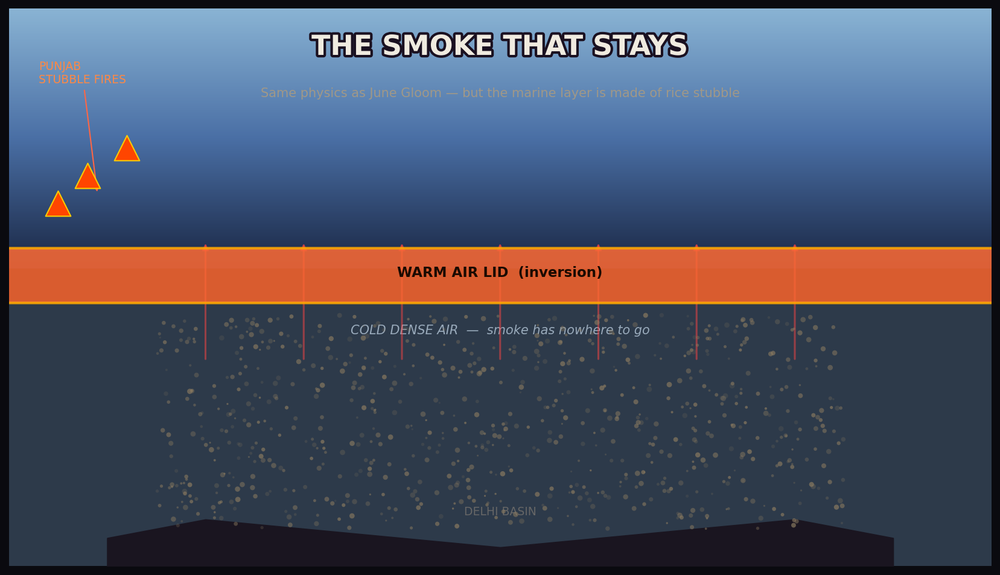

Farmers
Two weeks between rice harvest and wheat planting. Burning is the fastest, cheapest way to clear fields. Happy seeders cost money they don't have.
Hey! I'm Raj — born and raised in Delhi.
Every October, the sky turns against us. Let me show you why.
Entering Delhi...
Delhi · Punjab · MODIS · Inversion
When farmers burn rice stubble, a temperature inversion traps the plume over Delhi. AQI hits 500+. This is not weather — it's a system failing everyone.
Hover each area. This is home — and every winter it hurts to breathe here.
Week by week, field after field goes dark. Drag the slider — watch October unfold.
Each ring was a year of my life breathing this. Slide through 2020–2023.
Two weeks between rice harvest and wheat planting. Burning is the fastest, cheapest way to clear fields. Happy seeders cost money they don't have.
We eat the rice. We blame the farmers. We breathe the smoke. Many of us never see Punjab — only the gray sky above us.
Same physics as June Gloom — cold air trapped below a warm lid. Except the marine layer is made of rice stubble, and it stays for months.
25 years of satellite data. Court orders. Subsidies on paper. The burning gets worse. Nobody blames the agricultural calendar that made this inevitable.
